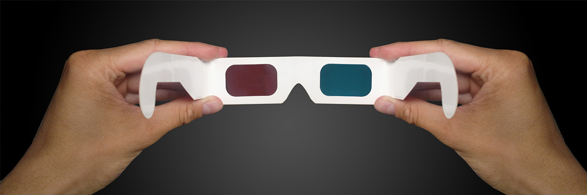

우주여행관
- POLAIS
- " 북극곰과 펭귄이 함께 떠나는 태양계 여행 "
- 남극에서 여행 온 펭귄 '제임스'와 유머러스한 북극곰 '불라디미르'는 극지방에서는 왜 오랜 시간 해가 뜨지 않는지에 대해 의문을 품습니다. 두 친구는 이 현상이 왜 일어나는지를 알기 위해 화성과 토성을 관측하지만, 새로운 의문만 더 늘어날 뿐입니다. 그래서 그들은 다른 행성을 직접 확인하기 위해 우주로 모험을 떠납니다.
우주여행관 상영시간표
| 1회 |
2회 |
3회 |
4회 |
5회 |
6회 |
| 10:00 |
11:00 |
13:00 |
14:00 |
15:00 |
16:00 |
| 상영시간 : 25분 |
시청각실

- 3D 영화
- " 딩키 "
- 중생대 백악기 초식공룡인 아파토사우루스의 아기공룡 '딩키'는 엄마와 헤어져 길을 잃고 헤매다 티라노사우르스의 공격을 받고 위험에 처하게 됩니다. 과연 아기공룡 '딩키'는 엄마공룡을 잘 만날 수 있을까요?
시청각실 상영시간표
| 구분 |
상영시간 |
| 오전(AM) |
10:00 |
10:20 |
10:40 |
11:00 |
11:20 |
11:40 |
| 오후(PM) |
12:00 |
12:20 |
12:40 |
13:00 |
13:20 |
13:40 |
| 14:00 |
14:20 |
14:40 |
15:00 |
15:20 |
15:40 |
| 16:00 |
16:20 |
16:40 |
|
|
|
자연사도서관
- 자연사도서관
- 자연사도서관은 이용자에게 좋은 과학지식과 책을 읽는 즐거움을 드리고자 자연사 관련 도서, 과학교양도서, 일반도서 등의 다양한 서적을 수집하여 제공하고 있습니다.
- 이용시 주의사항
- 가방, 쇼핑백 등의 개인소지품은 물품보관함에 보관 후 입장할 수 있습니다.
- 도서관에 음식물 또는 음료수를 소지하고 입장할 수 없습니다.
- 어린이를 동반한 부모님께서는 다른 관람객의 독서에 방해가 되지 않도록 지도하여 주시기 바랍니다.
- 도서는 도서관내에서는 자유롭게 열람할 수 있으나, 외부로의 반출 또는 대출은 불가합니다.
- 평일에 한하여 무료 개방하고 있습니다.
- 단체관람객의 기타 활동 장소로 이용하실 수 있습니다.